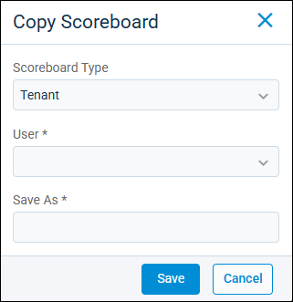
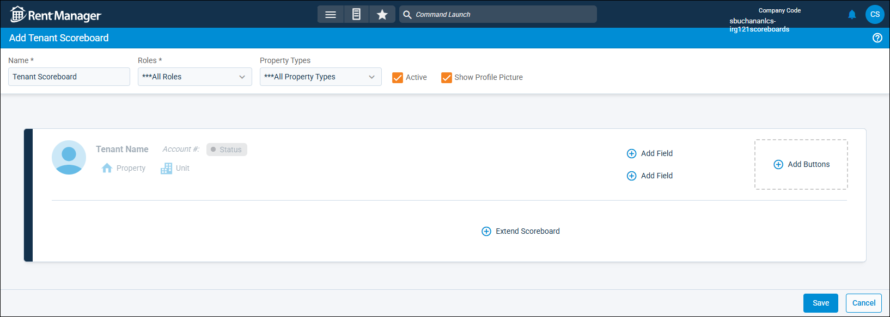
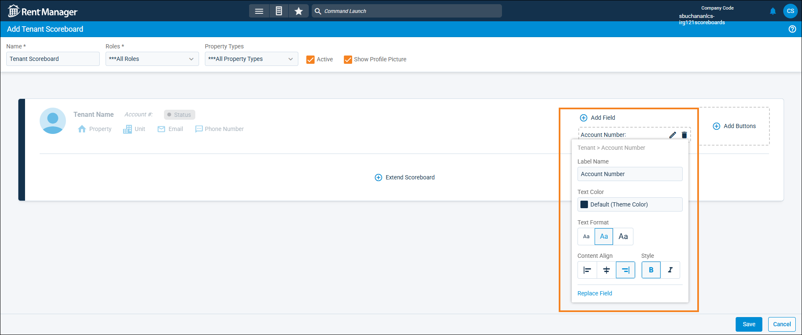
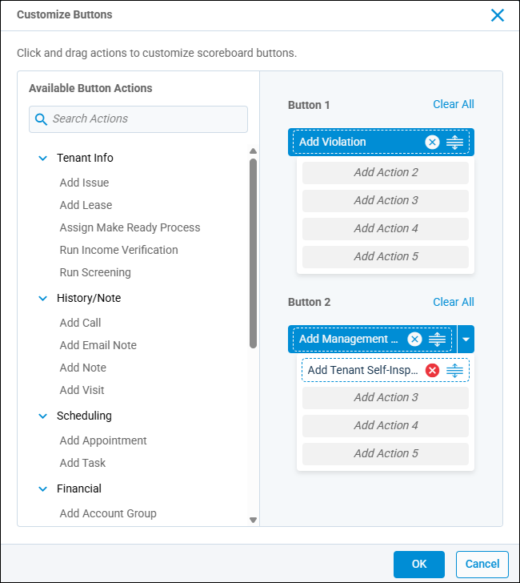
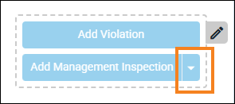

Source: https://rmxhelp.rentmanager.com/Topics/Express/Other/Scoreboards-Design.htm
Design a Scoreboard
The scoreboard designer allows you to customize the fields and buttons that display at the top of an entity's details page (tenant, prospect, etc.) and provides at-a-glance information about the currently selected entity account. Some scoreboard fields allow you to jump to the relevant area in Rent Manager.
There is a system default scoreboard template for each entity type. You can either create a copy of this system template to alter the fields for a new scoreboard, or you can create a new scoreboard from scratch. System scoreboard templates cannot be edited or deleted.
More Information
Scoreboards created in Rent Manager 12 are not backward compatible with Rent Manager Express. Any custom scoreboards created in Rent Manager 12 must be recreated in Express.
Related Privileges
| Group | Privilege | Column |
|---|---|---|
| Setup | Edit system scoreboards | Enabled |
| Edit own scoreboards | Enabled |
For more information, refer to Control User Access.
Step 1: Create a Scoreboard
The first step to creating a customized scoreboard is to select whether you wish to create a scoreboard from scratch or edit a copy of a scoreboard template.
To create a new custom scoreboard, do the following:
-
Go to
 arrow_forward
arrow_forward  Administration, then go to .
Administration, then go to .
The Scoreboards page displays. -
Click
 Add Scoreboard. To edit a copy of a scoreboard template, click the drop-down arrow next to Add Scoreboard and select Copy User's Scoreboard.
Add Scoreboard. To edit a copy of a scoreboard template, click the drop-down arrow next to Add Scoreboard and select Copy User's Scoreboard.More Information
To edit a copy of a scoreboard template from the Scoreboards page's list, on the desired template, click
 arrow_forward Copy. This opens the Copy Scoreboard pop-up, which allows you to copy and rename the scoreboard.
arrow_forward Copy. This opens the Copy Scoreboard pop-up, which allows you to copy and rename the scoreboard.
-
Select an option for the following fields:
Field Description Scoreboard Type
The entity for which you wish to create a custom scoreboard, such as Tenant.
User
To create a copy of an existing user's scoreboard and edit it to fit your needs, select that scoreboard from the drop-down list. Only users with personal scoreboards created for the selected Scoreboard Type display in this list.
This field displays only when copying an existing scoreboard.
Save As
The unique label to identify for the scoreboard, as it displays on the Scoreboards page in the Name column.
This field displays only when copying an existing scoreboard.
-
Click Add, or, if you are copying a user's scoreboard, click Save.
The new scoreboard is created and the designer for your new scoreboard displays.
Step 2: Customize the Scoreboard
Once the scoreboard is created, you can use the scoreboard designer to customize it with a variety of buttons, and fields.

At the top of the page, you can edit the following fields:
| Field | Description |
|---|---|
|
Active |
If checked, this scoreboard is available to be used in Rent Manager. Uncheck to disable this scoreboard. |
|
Name |
A unique label to identify the scoreboard, such as Custom Commercial Tenant. This label also displays on the Scoreboards page in the Name column. |
|
Property Types |
The property type(s) (e.g., Multi Family, Commercial, Manufactured Housing) assigned to this scoreboard. |
|
Roles |
The user roles (e.g., Administrator, Leasing Agent, Maintenance) assigned to the scoreboard. |
|
Show Profile Picture |
If checked, an icon for a profile picture displays on the left of the scoreboard. This scoreboard icon pulls the image from the contact marked as Primary for the entity. |
Customize Fields
Fields display information specific to the entity scoreboard being created or edited. These fields can be added and customized to align with your workflows. Additionally, you can elect to extend the scoreboard to add additional fields. The default fields that display on the left side of the scoreboard cannot be edited or deleted.

The following actions can be taken to customize fields:
| Action | Description | |||||||||||
|---|---|---|---|---|---|---|---|---|---|---|---|---|
|
Add |
To add a field to a scoreboard, click |
|||||||||||
|
Delete |
To remove a field from the scoreboard, click the field to select it and then click |
|||||||||||
|
Edit |
You can also edit the fields on the scoreboard, such as renaming the field or adjusting the text formatting. To edit a field, select it and then click |
|||||||||||
|
||||||||||||
|
Extend Scoreboard |
To extend the scoreboard in order to add up to ten additional fields, click To reposition the fields added on the extended section of the scoreboard, click and hold the field. Then, drag and drop it into the correct field order on the scoreboard. More Information This section of the scoreboard has expand/collapse functionality and is remembered by entity and user. For example, if you expand the scoreboard on a tenant account, the scoreboard remains expanded the next time you open that account and any other tenant account. |
Customize Buttons
Buttons are clickable elements on a scoreboard that initiate a key task (e.g., Run Income Verification, Add Email Note, Add Payment). To add buttons to the scoreboard, click  Add Buttons to open the Customize Buttons pop-up. Alternatively, to edit the buttons that display on the scoreboard, click
Add Buttons to open the Customize Buttons pop-up. Alternatively, to edit the buttons that display on the scoreboard, click  . The button actions available vary depending on the entity type of the scoreboard. If no actions are added, buttons do not display on the scoreboard.
. The button actions available vary depending on the entity type of the scoreboard. If no actions are added, buttons do not display on the scoreboard.
The Customize Buttons pop-up is where buttons are added and/or edited and includes two button sections, each with five available Add Action fields. Buttons added to the Add Action 1 field are top-line actions and all buttons added under it are nested in a drop-down menu.

The following actions can be taken to customize buttons:
| Action | Description |
|---|---|
|
Add |
The Customize Buttons pop-up is where buttons are added and/or edited and includes two button sections, each with five available Add Action fields. To add a button action on the scoreboard, click and hold the button from the list on the left. Then drag and drop it into the desired action field. When you are satisfied with your selections, click OK. Buttons added to the Add Action 1 field are top-line actions and all buttons added under it are nested in a drop-down menu. For example, if you move Add Management Inspection into Add Action 1, then move Add Tenant Self-Inspection into Add Action 2, the button displays as Add Management Inspection with Add Tenant Self-Inspection available by clicking the drop-down arrow on the right of the button.
 |
|
Delete |
To delete a button action from the button section, click . To remove all button actions from a section, click Clear All. |
|
Reorder |
To change the order of the button actions, select the button you wish to move. Then, click and hold |
Step 3: Save the Scoreboard
Once you have finished designing and customizing your scoreboard, click Save.